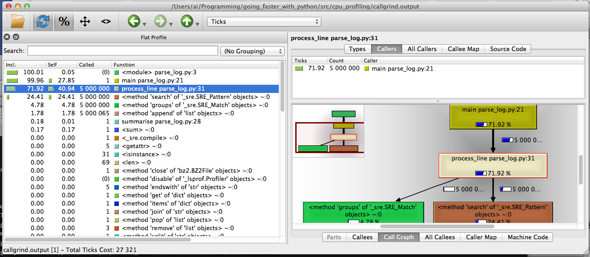
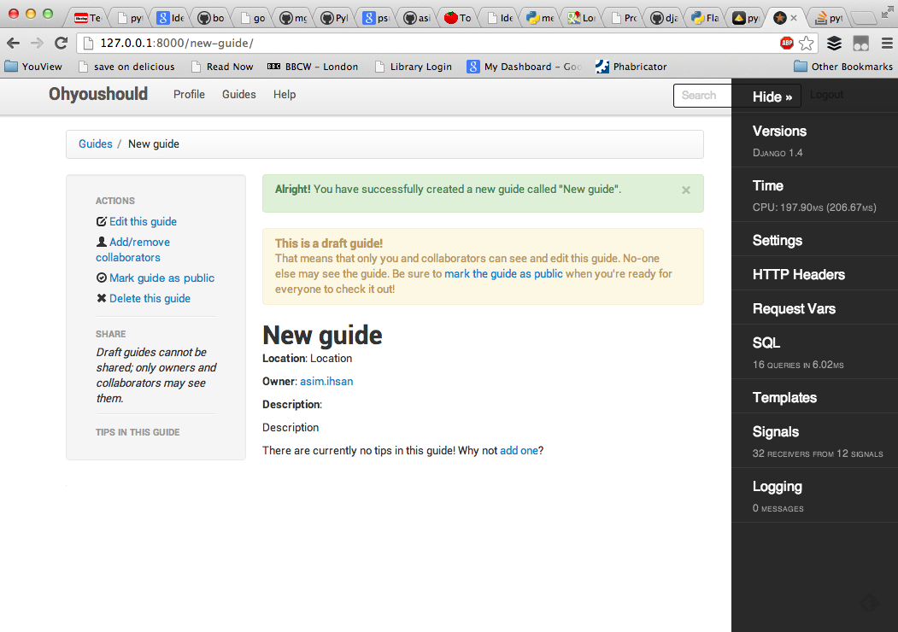
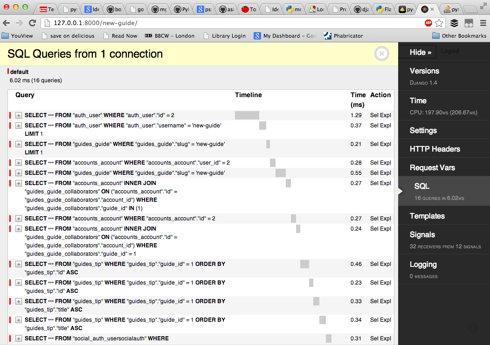

- What, why
- Time - where, how often
- Memory - how much, of what type
- Web frameworks
Profiling in Python
Asim Ihsan
(use arrow keys or space bar to advance, 'O' for overview)
Contents
Contents
- What, why
- Time - where, how often
- Memory - how much, of what type
- Web frameworks
What, why
- Want to know what a programme is doing
- Debugging
- Optimisation
- Deterministic vs. statistical profiling
Contents
- What, why
- Time - where, how often
- Memory - how much, of what type
- Web frameworks
Time
-
cProfileis a great built-in deterministic profiler.- deterministic \(\Rightarrow\) comprehensive; observer effect!
-
kcachegrindis the most user-friendly way to explore call graphs. -
line_profilerhas even higher overhead, but allows you line-by-line insight.
Our code example - log parsing
Input: bzip-compressed log file.
Format:
epoch,metric,value1362331306,cpu_usage,74 1362331307,memory_usage,1396 1362331308,cpu_usage,13 ...
Output: arithmetic mean of CPU usage.
- Metric =
cpu_usage
- Metric =
Code caveat
- This purpose of this code is not "how do I parse this log file the fastest?".
- The code that follows is deliberately obtuse and non-idiomatic.
re_log_line = re.compile("(.*?),(.*?),(.*)\n")
def main():
cpu_usages = []
with contextlib.closing(bz2.BZ2File(log_filepath)) as f_in:
for line in f_in:
process_line(line, cpu_usages)
summarise(cpu_usages)
def summarise(cpu_usages):
print "avg: %s" % (sum(cpu_usages) / len(cpu_usages), )
def process_line(line, cpu_usages):
re_obj = re_log_line.search(line)
try:
elems = re_obj.groups()
except:
pass
else:
if elems[1] == "cpu_usage":
cpu_usages.append(int(elems[2]))
cProfile from CLI
python -m cProfile -o profile.stats parse_log.py
- Outputs
profile.statsto current directory. - Can get a list of "hot functions" quite easily:
python -c "import pstats; p = pstats.Stats('profile.stats'); p.sort_stats('time').print_stats(5)"
ncalls tottime percall cumtime percall filename:lineno(function)
5000000 12.930 0.000 23.044 0.000 cpu_profiling/parse_log.py:31(process_line)
1 8.666 8.666 31.756 31.756 cpu_profiling/parse_log.py:21(main)
5000000 7.917 0.000 7.917 0.000 {method 'search' of '_sre.SRE_Pattern' objects}
5000000 1.621 0.000 1.621 0.000 {method 'groups' of '_sre.SRE_Match' objects}
5000065 0.575 0.000 0.575 0.000 {method 'append' of 'list' objects}
ncalls tottime percall cumtime percall filename:lineno(function)
5000000 12.930 0.000 23.044 0.000 cpu_profiling/parse_log.py:31(process_line)
1 8.666 8.666 31.756 31.756 cpu_profiling/parse_log.py:21(main)
5000000 7.917 0.000 7.917 0.000 {method 'search' of '_sre.SRE_Pattern' objects}
5000000 1.621 0.000 1.621 0.000 {method 'groups' of '_sre.SRE_Match' objects}
5000065 0.575 0.000 0.575 0.000 {method 'append' of 'list' objects}
- Program took 31.756s to run.
-
tottime: total time spent in function excluding calls to subfunctions. -
cumtime: total time spent in function including calls to subfunctions. - Note the obvious for
main, thatcumtime = percallandncalls = 1. - Top three functions take \(\frac{12.930+8.666+7.917}{31.756} \times 100 = 92.9\%\) of time.
ncalls tottime percall cumtime percall filename:lineno(function)
5000000 12.930 0.000 23.044 0.000 cpu_profiling/parse_log.py:31(process_line)
5000000 7.917 0.000 7.917 0.000 {method 'search' of '_sre.SRE_Pattern' objects}
5000000 1.621 0.000 1.621 0.000 {method 'groups' of '_sre.SRE_Match' objects}
5000065 0.575 0.000 0.575 0.000 {method 'append' of 'list' objects}
def process_line(line, cpu_usages):
re_obj = re_log_line.search(line)
try:
elems = re_obj.groups()
except:
pass
else:
if elems[1] == "cpu_usage":
cpu_usages.append(int(elems[2]))
-
process_linetakes \(\frac{12.930}{31.756} \times 100 = 40.7\%\) of the time excluding calls to subfunctions.
ncalls tottime percall cumtime percall filename:lineno(function)
1 8.666 8.666 31.756 31.756 cpu_profiling/parse_log.py:21(main)
def main():
cpu_usages = []
with contextlib.closing(bz2.BZ2File(log_filepath)) as f_in:
for line in f_in:
process_line(line, cpu_usages)
summarise(cpu_usages)
-
maintakes \(\frac{8.666}{31.756} \times 100 = 27.3\%\) of time, excluding calls to subfunctions.
kcachegrind
- Download KCachegrind source, build QT GUI called
QCachegrind. - Generate a
cProfileoutput file, as before. -
pip install pyprof2calltree -
pyprof2calltree -i profile.stats -o callgrind.output - Open
callgrind.outputinQCachegrind

line_profiler
-
pip install line_profiler - Decorate functions of interest with
@profile - Run
kernprof.pywith arguments.
line_profiler
(going_faster_with_python)Mill:src ai$ kernprof.py -l -v cpu_profiling/parse_log_line_profiler.py
File: cpu_profiling/parse_log_line_profiler.py
Function: main at line 21
Total time: 105.217 s
Line # Hits Time Per Hit % Time Line Contents
==============================================================
21 @profile
22 def main():
23 1 2 2.0 0.0 cpu_usages = []
24 1 34 34.0 0.0 with contextlib.closing(bz2.BZ2File(log_filepath)) as f_in:
25 5000001 11602598 2.3 11.0 for line in f_in:
26 5000000 93565103 18.7 88.9 process_line(line, cpu_usages)
27 1 49088 49088.0 0.0 summarise(cpu_usages)
- Nothing surprising., but note total time 105s vs. 32s.
File: cpu_profiling/parse_log_line_profiler.py
Function: process_line at line 32
Total time: 44.2081 s
Line # Hits Time Per Hit % Time Line Contents
==============================================================
32 @profile
33 def process_line(line, cpu_usages):
34 5000000 14758591 3.0 33.4 re_obj = re_log_line.search(line)
35 5000000 4406648 0.9 10.0 try:
36 5000000 6765236 1.4 15.3 elems = re_obj.groups()
37 except:
38 pass
39 else:
40 5000000 5814440 1.2 13.2 if elems[1] == "cpu_usage":
41 5000000 12463137 2.5 28.2 cpu_usages.append(int(elems[2]))
-
trytakes up time, and line 41 is opaque
Contents
- What, why
- Time - where, how often
- Memory - how much, of what type
- Web frameworks
Memory
- Track OS memory usage using e.g.
psutil -
pympler, useful collection of modules -
memory_profilerjust likeline_profiler
# 01_tracker_namedtuple.py
import collections
from pympler import tracker
Point = collections.namedtuple("Point", ["x", "y"])
Line = collections.namedtuple("Line", ["line_number", "text"])
def get_point(i):
return Point(i, i)
def get_line(i):
return Line(i, "some random text" * 100)
def main():
points = [get_point(i) for i in xrange(1000000)]
lines = [get_line(i) for i in xrange(100000)]
if __name__ == "__main__":
main()
Exercise - are slots worth it?
-
namedtuplesare a handy way to use__slots__. - Do these slot-less classes, with per-instance dicts, use more memory?
# 01_tracker_namedtuple.py
Point = collections.namedtuple("Point", ["x", "y"])
Line = collections.namedtuple("Line", ["line_number", "text"])
# 02_tracker_no_slots.py
class Point(object):
def __init__(self, x, y):
self.x = x
self.y = y
class Line(object):
def __init__(self, line_number, text):
self.line_number = line_number
self.text = text
OS memory usage
- Can use e.g.
psutilto get Resident Set Size (RSS) - Run script multiple times to rule out random error
-
measureproc.py: simple noddy script to do this
$ utilities/measureproc.py 03_memory/01_tracker_namedtuple.py
Summary of 5 runs
metric | min | Q1 | median | Q3 | max
--------+--------+--------+--------+--------+-------
clock | 1.81 | 1.81 | 1.83 | 1.92 | 2.15
user | 1.62 | 1.62 | 1.63 | 1.72 | 1.91
system | 0.17 | 0.18 | 0.18 | 0.18 | 0.19
rss_max | 277.26 | 277.71 | 287.63 | 298.02 | 311.60
$ utilities/measureproc.py 03_memory/02_tracker_no_slots.py
Summary of 5 runs
metric | min | Q1 | median | Q3 | max
--------+--------+--------+--------+--------+-------
clock | 2.50 | 2.59 | 2.62 | 2.65 | 2.79
user | 2.08 | 2.13 | 2.19 | 2.23 | 2.32
system | 0.32 | 0.36 | 0.37 | 0.38 | 0.41
rss_max | 588.88 | 605.69 | 607.55 | 607.69 | 608.93
pympler.tracker
-
pip install pympler - Using
pympler.tracker.SummaryTracker()is simplest. - Instantiate, run code, then call
print_diff().
from pympler import tracker
def main():
tr = tracker.SummaryTracker()
points = [get_point(i) for i in xrange(1000000)]
lines = [get_line(i) for i in xrange(100000)]
tr.print_diff()
pympler.tracker
$ 03_memory/01_tracker_namedtuple.py
types | # objects | total size
======================== | =========== | ============
str | 100968 | 156.17 MB
<class '__main__.Point | 1000000 | 68.66 MB
int | 1099724 | 25.17 MB
list | 970 | 9.18 MB
<class '__main__.Line | 100000 | 6.87 MB
dict | 1 | 1.02 KB
$ 03_memory/02_tracker_no_slots.py
types | # objects | total size
======================== | =========== | ============
<class '__main__.Point | 1000000 | 61.04 MB
list | 970 | 9.18 MB
<class '__main__.Line | 100000 | 6.10 MB
str | 970 | 54.26 KB
int | 122 | 2.86 KB
dict | 1 | 1.02 KB
pympler.class_tracker
- Can filter by classes with another
pymplermodule. - Note that it needs to use
weakref's, so can't tracknamedtuples- Something to do with using
__slots__? I'm not sure.
- Something to do with using
- Change our example to use classes rather than named tuples
class Point(object):
def __init__(self, x, y):
self.x = x
self.y = y
class Line(object):
def __init__(self, line_number, text):
self.line_number = line_number
self.text = text
def main():
tracker = ClassTracker()
tracker.track_class(Point)
tracker.track_class(Line)
tracker.create_snapshot()
points = [get_point(i) for i in xrange(100000)]
lines = [get_line(i) for i in xrange(10000)]
tracker.create_snapshot()
tracker.stats.print_summary()
$ 03_memory/03_class_tracker.py
---- SUMMARY ------------------------------------------------------------------
active 0 B average pct
__main__.Line 0 0 B 0 B 0%
__main__.Point 0 0 B 0 B 0%
active 0 B average pct
__main__.Line 10000 19.14 MB 1.96 KB 0%
__main__.Point 100000 35.10 MB 368 B 1%
-------------------------------------------------------------------------------
memory_profiler
-
pip install memory_profiler - Decorate functions with
@profile, then run withmemory_profilermodule.- Just like
line_profiler.
- Just like
$ python -m memory_profiler 03_memory/04_memory_profiler.py
Filename: 03_memory/04_memory_profiler.py
Line # Mem usage Increment Line Contents
================================================
14 @profile
15 8.434 MB 0.000 MB def main():
16 231.766 MB 223.332 MB lines = [get_line(i) for i in xrange(100000)]
17 342.852 MB 111.086 MB points = [get_point(i) for i in xrange(1000000)]
Contents
- What, why
- Time - where, how often
- Memory - how much, of what type
- Web frameworks
Web frameworks
-
debug-toolbaris awesome! - Originally for Django,
django-debug-toolbar- Clones available for Flask (
flask-debugtoolbar) and Pyramid (pyramid-debugtoolbar)
- Clones available for Flask (



All done
- GitHub repo for code: http://goo.gl/7V5Sv
- Copy of this presentation: http://goo.gl/RozQF
Thank you!